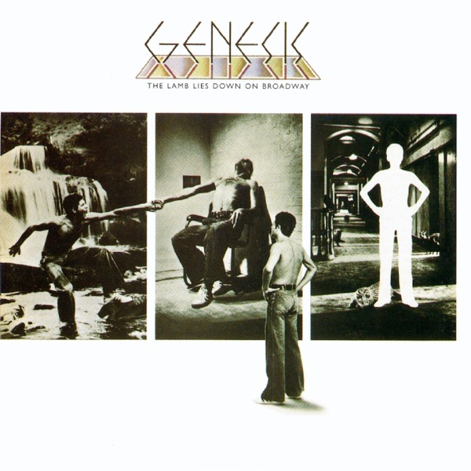

The Lamb Lies Down On Broadway
Genesis
Upgrade idea: This Miles Showell half-speed master is already the definitive modern reissue. The original 1974 Charisma CAS 101 UK pressing is the audiophile original if you want a period artifact.
- Original release
- 1974
- Pressing year
- 2018
- Country
- US
- Format
- 2× Vinyl LP, Album, Deluxe Edition, Reissue, Repress, Stereo (Half-Speed Mastered, 180g)
- Label / Cat#
- Charisma – R1 516782 / Atlantic – R1 516782 / Rhino Records (2) – R1 516782
- Genres
- Rock
- Styles
- Prog Rock, Art Rock
- Discogs release
- 12798403
- Discogs master
- 29256
- Apple Music
- The Lamb Lies Down on Broadway (2007 Stereo Mix)
- Wikipedia
- The Lamb Lies Down On Broadway
Production notes
Tracklist (Discogs)
| A1 | The Lamb Lies Down On Broadway | |
| A2 | Fly On A Windshield | |
| A3 | Broadway Melody Of 1974 | |
| A4 | Cuckoo Cocoon | |
| A5 | In The Cage | |
| A6 | The Grand Parade Of Lifeless Packaging | |
| B1 | Back In N.Y.C. | |
| B2 | Hairless Heart | |
| B3 | Counting Out Time | |
| B4 | Carpet Crawlers | |
| B5 | The Chamber Of 32 Doors | |
| C1 | Lilywhite Lilith | |
| C2 | The Waiting Room | |
| C3 | Anyway | |
| C4 | Here Comes The Supernatural Anaesthetist | |
| C5 | The Lamia | |
| C6 | Silent Sorrow In Empty Boats | |
| The Colony Of Slippermen | ||
| D2 | Ravine | |
| D3 | The Light Dies Down On Broadway | |
| D4 | Riding The Scree | |
| D5 | In The Rapids | |
| D6 | It |
Tracklist (Apple Music)
| 1 | The Lamb Lies Down on Broadway (2007 Stereo Mix) | 4:53 |
| 2 | Fly on a Windshield (2007 Stereo Mix) | 2:45 |
| 3 | Broadway Melody of 1974 (2007 Stereo Mix) | 2:11 |
| 4 | Cuckoo Cocoon (2007 Stereo Mix) | 2:12 |
| 5 | In the Cage (2007 Stereo Mix) | 8:12 |
| 6 | The Grand Parade of Lifeless Packaging (2007 Stereo Mix) | 2:46 |
| 7 | Back in N.Y.C. (2007 Stereo Mix) | 5:39 |
| 8 | Hairless Heart (2007 Stereo Mix) | 2:10 |
| 9 | Counting out Time (2007 Stereo Mix) | 3:40 |
| 10 | The Carpet Crawlers (2007 Stereo Mix) | 5:14 |
| 11 | The Chamber of 32 Doors (2007 Stereo Mix) | 5:45 |
| 12 | Lilywhite Lilith (2007 Stereo Mix) | 2:48 |
| 13 | The Waiting Room (2007 Stereo Mix) | 5:17 |
| 14 | Anyway (2007 Stereo Mix) | 3:17 |
| 15 | Here Comes the Supernatural Anaesthetist (2007 Stereo Mix) | 2:49 |
| 16 | The Lamia (2007 Stereo Mix) | 6:57 |
| 17 | Silent Sorrow in Empty Boats (2007 Stereo Mix) | 3:01 |
| 18 | The Colony of Slippermen: I. The Arrival, II. A Visit to the Doktor, III. Raven (2007 Stereo Mix) | 8:11 |
| 19 | Ravine (2007 Stereo Mix) | 2:05 |
| 20 | The Light Dies Down on Broadway (2007 Stereo Mix) | 3:32 |
| 21 | Riding the Scree (2007 Stereo Mix) | 4:07 |
| 22 | In the Rapids (2007 Stereo Mix) | 2:22 |
| 23 | It (2007 Stereo Mix) | 4:18 |
Personnel & credits
- Richard Manning (3) — Artwork [Retouching]
- Mike Rutherford — Bass, Twelve-String Guitar [12-string Guitar]
- Graham Bell — Chorus [Choral Contribution]
- Hipgnosis (2) — Design [Sleeve Design], Photography By [All Photography By]
- Dave Hutchins — Engineer
- George Hardie — Graphics
- Steve Hackett — Guitar [Guitars]
- Tony Banks — Keyboards
- Miles Showell — Lacquer Cut By
- Peter Gabriel — Liner Notes
- Nick Davis — Mixed By [2008 Mixes By]
- Phil Collins — Percussion, Vibraphone [Vibing], Voice [Voicing]
- Genesis — Producer [Production]
- John Burns — Producer [Production]
- Peter Gabriel — Voice [Voices], Flute
- Genesis — Written-By [All Titles Written By]
Identifiers
- Barcode: 603497896196 (Scanned, UPC-A)
- Barcode: 6 03497 89619 6 (Text)
- Matrix / Runout: BI41854-01 A1 V= 6748985 ABBEY ROAD. MILES. ROOM 30. (Runout side A)
- Matrix / Runout: BI41854-01 B1 6748985 V+ MILES. ABBEY ROAD. ROOM 30. (Runout side B)
- Matrix / Runout: BD00972-01 K1 VI- LPBOX 14 K-2 ⓂMILES THE PARADIGM 1/2 SPEED PROCESS. (Runout side C)
- Matrix / Runout: BD00972-01 L2 3△ ABBEY ROAD. MILES. LPBOX 14-L (Runout side D)
Notes
2018 repress of the 2008 Remix.
Sides A and B uses [a383408] [l217694] lacquer cuts. 2018 [l313190] mastering year.
Side C uses a 2008 [a383408] at [l181778] lacquer cut. 2013 [l313190] mastering year.
Side D uses a [a383408] [l217694] lacquer cut. 2013 [l313190] mastering year.
Runouts are etched, except for "Ⓜ," which is stamped.
On the back cover:
℗ & © 2018, 1974 Anthony Banks Ltd, Philip Collins Ltd, Peter Gabriel Ltd, Stephen Hackett Ltd, Michael Rutherford Ltd, under exclusive license to Atlantic Recording Corporation
Manufactured for & Marketed by Rhino Entertainment Company, a Warner Music Group Company
Publishing: Anthony Banks, Philip Collins Ltd, Stephen Hackett Ltd, Real World Music Ltd, Michael Rutherford Ltd, EMI Music Publishing Ltd, Imagem, Sony ATV
In the gatefold:
Copyright Peter Gabriel 1974
Recorded in Wales with the Island Mobile Studio
On the labels:
Publishing: Anthony Banks, Philip Collins Ltd, Stephen Hackett Ltd, Real World Music Ltd, Michael Rutherford Ltd, EMI Music Publishing Ltd, Imagem, Sony ATV
℗ & © 2018, 1974 Anthony Banks Ltd, Philip Collins Ltd, Peter Gabriel Ltd, Stephen Hackett Ltd, Michael Rutherford Ltd, under exclusive license to Atlantic Recording Corporation
Manufactured for & Marketed by Rhino Entertainment Company, a Warner Music Group Company
Manufactured in E.U.
On the hype sticker:
The Classic Albums
Deluxe Edition
Featuring:
Half Speed Mastering
2008 Mixes
180 Gram Audiophile Vinyl
Notes & discrepancies
- Track count differs: Discogs=22, Apple Music=23
- Release year differs: your pressing=2018, Apple Music edition=1974. Apple Music typically streams the most recent remaster.
The Lamb Lies Down on Broadway is Genesis’s sixth studio album, released in November 1974 on Charisma Records, and widely considered one of the most ambitious concept albums in progressive rock history. A sprawling double LP built around a surrealist narrative written by Peter Gabriel — his final album with the band — it follows Rael, a Puerto Rican street kid from New York City, through a bizarre dreamscape of Kafka-esque encounters, literary allusions, and psychedelic imagery. Musically, the album balances Genesis’s trademark intricate instrumental passages with a harder, more visceral edge than their earlier work, reflecting Gabriel’s increasing interest in street-level Americana.
The album represents the apex and endpoint of the Gabriel-era Genesis: after the subsequent tour, Gabriel departed to pursue his solo career, fundamentally changing the band’s identity. The Lamb remains a touchstone of progressive rock — demanding, sprawling, and uncompromising — and has grown in critical stature over the decades as a singular artifact of 1970s rock ambition.
The 2018 Deluxe Edition reissue (Rhino / Atlantic, catalog R1 516782) was mastered by Miles Showell at Abbey Road Studios using the half-speed mastering process — the same technique used for the highly regarded Beatles and Led Zeppelin half-speed reissues. Half-speed mastering cuts the lacquer at half the normal speed, allowing the cutting stylus to inscribe finer groove detail and improving high-frequency resolution. Miles Showell is one of the foremost practitioners of this technique, and his Abbey Road half-speed masters are among the most sought-after contemporary reissues. The matrix codes
BI41854-01 A1 V= ABBEY ROAD. MILES. ROOM 30confirm this provenance.About this 2018 US pressing (2× Vinyl, LP, Deluxe Edition, Reissue): Rhino / Atlantic catalog R1 516782, 2018 half-speed reissue. Barcode 603497896196. Mastered by Miles Showell at Abbey Road Studios, Room 30, half-speed process.